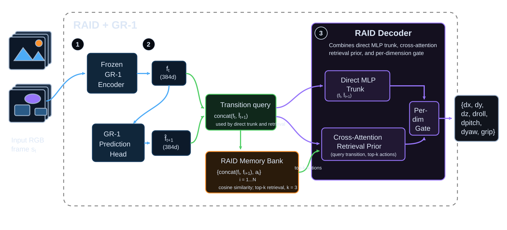

Seed 0
RAID, direct visual, and ground truth actions in the 200-demo LIBERO-Spatial setting.
RAID pairs a GR-1 world-model encoder with a retrieval-augmented action decoder, using remembered demonstrations to infer the motor command behind a dreamed latent transition.
Two qualitative grids compare the current frame, GR-1's dreamed next frame, RAID actions, direct visual baseline actions, and ground truth across representative random seeds.
RAID, direct visual, and ground truth actions in the 200-demo LIBERO-Spatial setting.

Additional sampled transitions from the same 200-demo evaluation setup.
RAID uses a frozen world-model encoder to imagine the next latent state, then decodes the implied motor command with a retrieval-augmented inverse-dynamics head.
Problem. Given GR-1 features ft, ft+1 and a memory bank M = {(fi, fi+1, ai)}, RAID predicts the normalized action that caused a transition.
At deployment, GR-1 supplies a one-step dreamed feature f̂t+1. RAID retrieves the nearest demonstrated transitions in the joint feature space, attends over their actions, and blends that action prior with a direct MLP estimate.
GR-1 + RAID. We freeze the GR-1 encoder and use its 384-dimensional class token as the state representation. The decoder conditions on k = 3 retrieved demonstrations alongside the dreamed transition.
Direct trunk. A two-hidden-layer MLP estimates the action from concat(ft, f̂t+1).
Cross-attention prior. The query transition attends over retrieved actions:
Per-dimension gate. The final action is a dimension-wise blend of the direct estimate and the retrieval prior:
â = g ⊙ dφ(ft, ft+1) + (1 − g) ⊙ âpriorg = σ(W concat(ft, ft+1) + b)
Prior dropout and Gaussian jitter keep the model from simply copying the retrieved action, forcing the trunk and retrieval prior to share the work.
The paper architecture combines a frozen GR-1 encoder and prediction head with a RAID decoder that retrieves nearby transitions, attends over their actions, and gates the result into a 7-DOF command.

On LIBERO-Spatial with 25 demonstrations, cross-attention RAID over GR-1 features reaches 0.132 validation MSE versus 0.842 for the same visual head without retrieval — a 6.4× improvement.
Side-by-side LIBERO-Spatial rollouts show the direct visual baseline and the RAID visual policy under the same comparison setup.
Direct action prediction from visual features without retrieval.
Retrieval-augmented action prediction using remembered transitions.